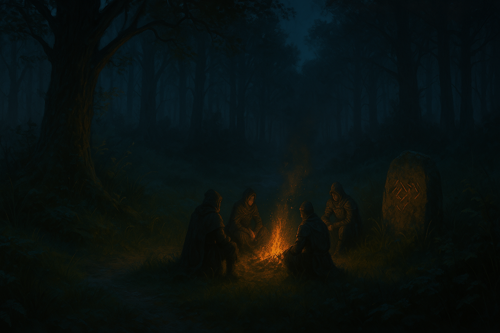

Chapter 3: Into the Woods
Curse of Vowalon

Curse of Vowalon
15048.7.19 日落後
「台北市議員」邁入了嚎叫森林。天色逐漸暗去，冒險者們根據謹慎的判斷，沒有迷路。在路邊，似乎有德魯伊留下的神秘訊息。
冒險者們找了個地方，吃了 Jasmine 送給他們的三明治作為晚餐。
準備出發繼續冒險時，Midori 和 Jiaheng 突然感到不適而嘔吐，其他冒險者也有些微的不舒服。在冒險者們互相幫助下，暫時穩定了身體狀況，然後決定去附近尋找「解毒草」。
服用了解毒草後，冒險者們就近找了合適的地點，紮營睡去。兩位妖精 Jiaheng 和 Samael 輪流守夜，這一晚平靜地過去了。
15048.7.20
台北市議員們從睡夢中醒來，簡單吃過早餐後，便繼續冒險。
他們遇到了一批三隻的野狼，在奮戰後擊敗了野狼，也搜刮了狼皮。渡過了河，台北市議員聽到了野狼的嚎叫聲，並準備對狼群進行攻擊。在這場慘烈的戰鬥中，兩名冒險者在死亡邊緣甦醒，另外三名冒險者葬送了性命，只留下三名冒險者成功擊退了狼群。突然間，那三名死亡的冒險者咳著嗽醒了過來，看起來極度疲憊。冒險者們決定在此好好休息，以免在路途中再次遇上危險而保護不了自己。
經過了半日的休息，台北市議員於深夜再度上路。他們發現了路邊一處刻有神秘的字樣，隨後，一名自稱為 Ra’Leer 的年輕妖精德魯伊女子以及他的異色瞳狼夥伴 Gary 現身，告訴他們嚎叫森林裡的動物們都被神秘的力量所影響了。
Ra’Leer 雖然性格強硬，但是還算友善，帶領著台北市議員擊退了一批來襲的狼後，走出了嚎叫森林，並和 Gary 一同回到了森林內。Wescoe 鎮就在眼前了。